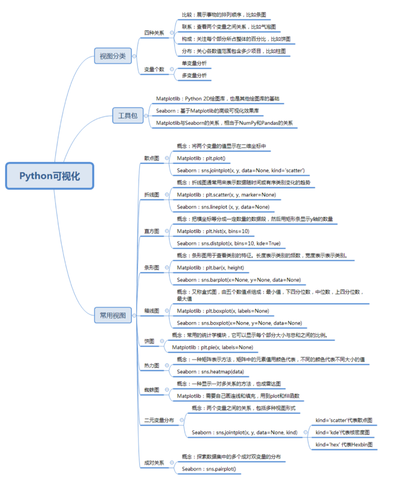

15-一次学会Python数据可视化的10种技能
可视化视图都有哪些?
- 比较： 飙数据各类别的关系，或者是随着时间的变化趋势， 比如 折线图
- 联系： 查看两个或两个以上变量之间的关系， 比如三点图
- 构成： 每个部分占整体的百分比，或者是随着时间的百分比变化，比如饼图
- 分布： 关注单个变量，或多个变量的分布情况，比如直方图
散点图
非常适合展示两个变量之间的关系
import matplotlib.pyplot as plt
plt.scatter(x, y, marker=None)
# x, y 是坐标
# marker 是代表了标记符号， 比如 "x", ">", "o"
# seaborn
import seaborn as sns
sns.joinplot(x, y, data=None, kind='scatter')
# x, y 是 data 的下标
# data 是我们要传的数据, 一般是 DataFrame 类型,
# kind 取 scatter 代表散点图
具体画图:
import numpy as np
import pandas as pd
import matplotlib.pyplot as plt
import seaborn as sns
%matplotlib inline
# 散点图
# 数据准备
N=1000
x = np.random.randn(N)
y = np.random.randn(N)
# Matplotlib 画图
plt.scatter(x, y, marker='x')
plt.show()
# 用 Seaborn 画散点图
df = pd.DataFrame({'x': x, 'y':y})
sns.jointplot(x='x', y='y', data=df, kind='scatter')
plt.show()
折线图
表示数据随着时间变化的趋势
Matplotlib 中直接使用 plt.plot(),保证数据有序
Seaborn 中使用 sns.lineplot(x, y, data=None)
x, y 是 data 的下标, data 一般是 DataFrame 类型
# 数据准备
x = [2010, 2011, 2012, 2013, 2014, 2015, 2016, 2017, 2018, 2019]
y= [5, 3, 6, 20, 17, 16, 19, 30, 32, 35]
# 使用matlibplot
plt.plot(x, y)
plt.show()
# Seaborn
df = pd.DataFrame({'x': x, 'y':y})
sns.lineplot(x='x', y='y', data=df)
plt.show()
直方图
变量的数值分布
把横坐标等分成了一定的数量的小区间，这个小区间也叫做“箱子”， 然后再每个“箱子”内用矩形条(bars)展示该箱子数(y)。
Matplotlib 使用 plt.hist(x, bins = 10) ，x 是一维数组, bins 代表 直方图中 箱子的数量 ， 默认10
Seaborn 中使用 sns.distplot(x, bins = 10, kde=True) , x 是一维数组， bins 代表直方图箱子的数量， kde 代表显示核密度估计。 核密度估计是通过核函数来估计概率密度的方法
# 数据准备
a = np.random.randn(100)
s = pd.Series(a)
# Matplotlib
plt.hist(s)
plt.show()
# Seaborn
sns.distplot(s, kde=False)
plt.show()
# Seaborn
sns.distplot(s, kde=True)
plt.show()
条形图
查看类别的特征
长条形长度表示类别的频数
Matplot 使用 plt.bar(x, height), x 代表 x 轴 位置的序列, height 代表 y 轴数值的序列
Seaborn 使用 sns.barplot(x= None, y= None, data=None), data 为 DataFrame 类型, x,y 是data 中的变量
# 数据准备
x = ['cat1', 'cat2', 'cat3', 'cat4', 'cat5']
y = [5, 4, 8, 12, 7]
# Matplotlib
plt.bar(x,y)
plt.show()
# Seaborn
sns.barplot(x,y)
plt.show()
箱线图
五个数值点, 最大值，最小值，中位数，上下四分位数
分析数据的差异性、离散程度和异常值等.
Matplotlib plt.boxplot(x, labes = None)， x 代表绘制箱线图的数据, labes 是缺省值，可以为箱线图添加标签
Seaborn 中我们使用 sns.boxplot(x =None, y=None, data=None) 函数，data 为 DataFrame 类型, x, y 是data 中的变量
# 准备数据
data= np.random.normal(size=(10,4))
lables = ['A', 'B', 'C', 'D']
# Matplotlib
plt.boxplot(data, labels = lables)
plt.show()
#Seaborn
df = pd.DataFrame(data, columns=lables)
sns.boxplot(df)
plt.show()
饼图
显示每个部分与总和之间的比列
Matplotlib 使用 plt.pie(x, labels=None)其中x 代表绘制饼图的数据, labels 是缺省值，可以为饼图添加标签
Seaborn 无饼图
# 数据准备
nums = [25, 37, 33, 37,6]
labels =['High-school', 'Bachelor', 'Master', 'Ph.d', 'Others']
# matplotlib
plt.pie(x =nums, labels = labels)
plt.show()
热力图
heat map ，是一种矩阵表示方法， 其中矩阵中的元素值用颜色来代表。
一种非常直观的多元变量分析方法
Seaborn sns.heatmap(data)
# 数据准备
# flights = sns.load_dataset("flights") 下载不成功
# https://github.com/mwaskom/seaborn-data 下载地址
# 使用pandas
flights = pd.read_csv("datasets/flights.csv")
data= flights.pivot('year', 'month', 'passengers')
# seaborn
sns.heatmap(data)
plt.show()
蜘蛛图
显示一对多关系的方法，在蜘蛛图中，一个变量相对于另一个变量的显著性是清晰可见的。
# 蜘蛛图
# 中文
from matplotlib.font_manager import FontProperties
font_zh = FontProperties(fname= '/Library/Fonts/Songti.ttc')
# 数据准备
labels = np.array([u'推进', 'KDA', u'生存', u'团战', u'发育', u'输出'])
stats = [83, 61, 95, 67, 76, 88]
## 画图数据准备， 角度、状态值
angles = np.linspace(0, 2*np.pi, len(labels), endpoint=False)
stats = np.concatenate((stats, [stats[0]]))
angles = np.concatenate((angles, [angles[0]]))
# Matplotlib
fig = plt.figure()
ax = fig.add_subplot(111, polar=True)
ax.plot(angles, stats, 'o-', linewidth=2)
ax.fill(angles,stats, alpha=0.25)
# 设置中文
ax.set_thetagrids(angles* 180/np.pi, labels, FontProperties=font_zh)
plt.show()
二元变量分布
两个变量之间的关系，就需要用到二元变量分布。
二元分布有多种呈现方式，比如 散点图
Seaborn 中使用 sns.joinplot(x, y, data=None, kind) 其中 kind 有散点图(scatter)， 核密度图(kde), Hexbin 图(hex)
## 二元分布变量
# 数据准备
# flights = sns.load_dataset("flights") 下载不成功
# https://github.com/mwaskom/seaborn-data 下载地址
# 使用pandas
tips = pd.read_csv("datasets/tips.csv")
tips.head(10)
# Searborn 画图
sns.jointplot(x="total_bill", y="tip", data=tips, kind='scatter')
sns.jointplot(x="total_bill", y="tip", data=tips, kind='kde')
sns.jointplot(x="total_bill", y="tip", data=tips, kind='hex')
成对关系
探索的数据集中有多个成对双变量，可以采用 sns.pairplot()函数。 它同时展示出DataFrame 中每个变量的关系, 另外在对角线上，可以看到每个变量自身作为单变量的分布情况。
## 二元分布变量
# 数据准备
# flights = sns.load_dataset("flights") 下载不成功
# https://github.com/mwaskom/seaborn-data 下载地址
# 使用pandas
iris = pd.read_csv("datasets/iris.csv")
# Seaborn
sns.pairplot(iris)
plt.show()
